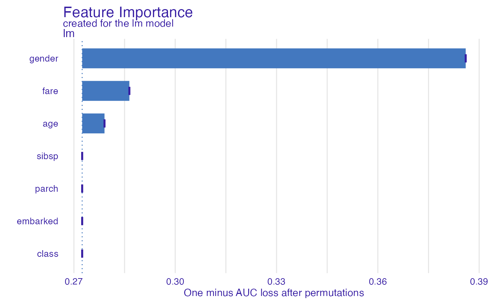
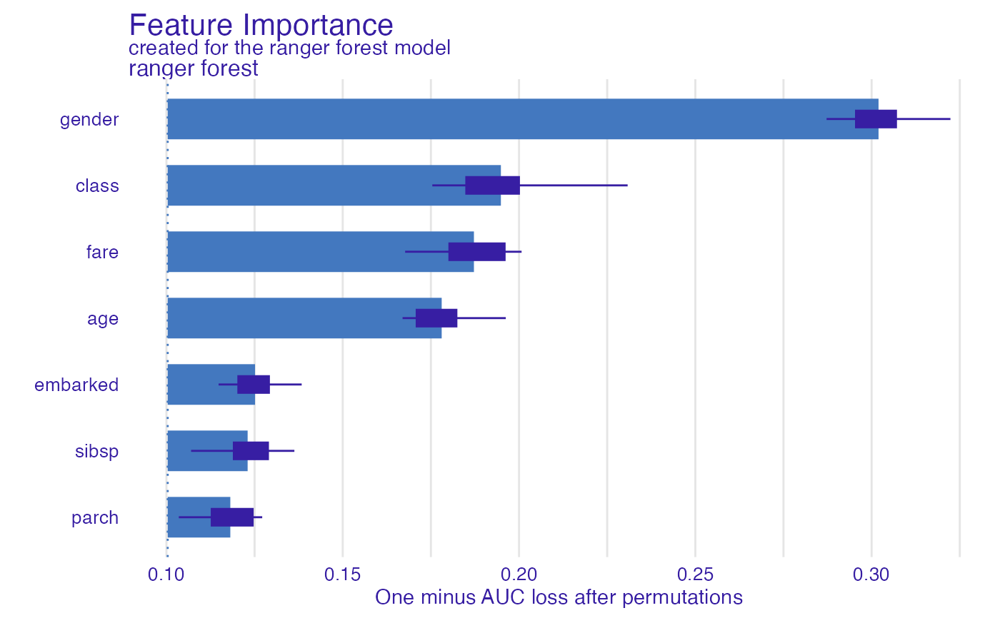
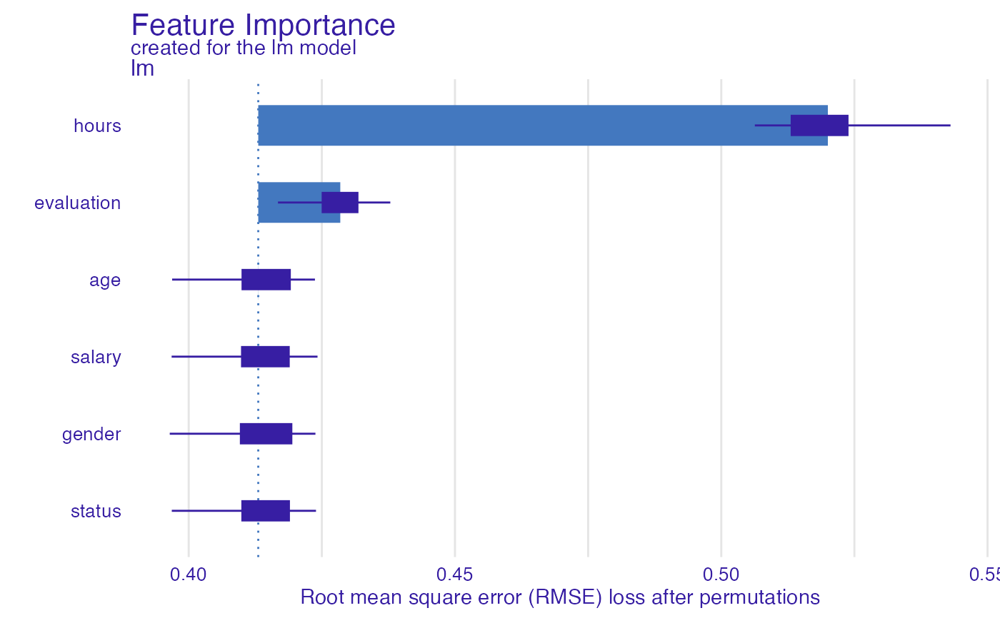

This function plots variable importance calculated as changes in the loss function after variable drops.
It uses output from feature_importance function that corresponds to
permutation based measure of variable importance.
Variables are sorted in the same order in all panels.
The order depends on the average drop out loss.
In different panels variable contributions may not look like sorted if variable
importance is different in different in different models.
# S3 method for feature_importance_explainer plot( x, ..., max_vars = NULL, show_boxplots = TRUE, bar_width = 10, desc_sorting = TRUE, title = "Feature Importance", subtitle = NULL )
Arguments
| x | a feature importance explainer produced with the |
|---|---|
| ... | other explainers that shall be plotted together |
| max_vars | maximum number of variables that shall be presented for for each model.
By default |
| show_boxplots | logical if |
| bar_width | width of bars. By default |
| desc_sorting | logical. Should the bars be sorted descending? By default TRUE |
| title | the plot's title, by default |
| subtitle | the plot's subtitle. By default - |
Value
a ggplot2 object
Details
Find more details in the Feature Importance Chapter.
References
Explanatory Model Analysis. Explore, Explain, and Examine Predictive Models. https://ema.drwhy.ai/
Examples
library("DALEX") library("ingredients") model_titanic_glm <- glm(survived ~ gender + age + fare, data = titanic_imputed, family = "binomial") explain_titanic_glm <- explain(model_titanic_glm, data = titanic_imputed[,-8], y = titanic_imputed[,8])#> Preparation of a new explainer is initiated #> -> model label : lm ( default ) #> -> data : 2207 rows 7 cols #> -> target variable : 2207 values #> -> predict function : yhat.glm will be used ( default ) #> -> predicted values : No value for predict function target column. ( default ) #> -> model_info : package stats , ver. 4.0.5 , task classification ( default ) #> -> predicted values : numerical, min = 0.1490412 , mean = 0.3221568 , max = 0.9878987 #> -> residual function : difference between y and yhat ( default ) #> -> residuals : numerical, min = -0.8898433 , mean = 4.198546e-13 , max = 0.8448637 #> A new explainer has been created!# \donttest{ library("ranger") model_titanic_rf <- ranger(survived ~., data = titanic_imputed, probability = TRUE) explain_titanic_rf <- explain(model_titanic_rf, data = titanic_imputed[,-8], y = titanic_imputed[,8], label = "ranger forest", verbose = FALSE) fi_rf <- feature_importance(explain_titanic_rf) plot(fi_rf)HR_rf_model <- ranger(status~., data = HR, probability = TRUE) explainer_rf <- explain(HR_rf_model, data = HR, y = HR$status, verbose = FALSE, precalculate = FALSE) fi_rf <- feature_importance(explainer_rf, type = "raw", max_vars = 3, loss_function = DALEX::loss_cross_entropy) head(fi_rf)#> variable mean_dropout_loss label #> 1 _full_model_ 380.9728 ranger #> 2 status 380.9728 ranger #> 3 gender 546.2558 ranger #> 4 age 626.9204 ranger #> 5 salary 693.4965 ranger #> 6 evaluation 876.8476 rangerHR_glm_model <- glm(status == "fired"~., data = HR, family = "binomial") explainer_glm <- explain(HR_glm_model, data = HR, y = as.numeric(HR$status == "fired"))#> Preparation of a new explainer is initiated #> -> model label : lm ( default ) #> -> data : 7847 rows 6 cols #> -> target variable : 7847 values #> -> predict function : yhat.glm will be used ( default ) #> -> predicted values : No value for predict function target column. ( default ) #> -> model_info : package stats , ver. 4.0.5 , task classification ( default ) #> -> predicted values : numerical, min = 0.00861694 , mean = 0.3638333 , max = 0.7822214 #> -> residual function : difference between y and yhat ( default ) #> -> residuals : numerical, min = -0.7755901 , mean = -1.293796e-13 , max = 0.9820537 #> A new explainer has been created!fi_glm <- feature_importance(explainer_glm, type = "raw", loss_function = DALEX::loss_root_mean_square) head(fi_glm)#> variable mean_dropout_loss label #> 1 _full_model_ 0.4130594 lm #> 2 status 0.4130594 lm #> 3 gender 0.4130640 lm #> 4 salary 0.4130675 lm #> 5 age 0.4130852 lm #> 6 evaluation 0.4284620 lm# }